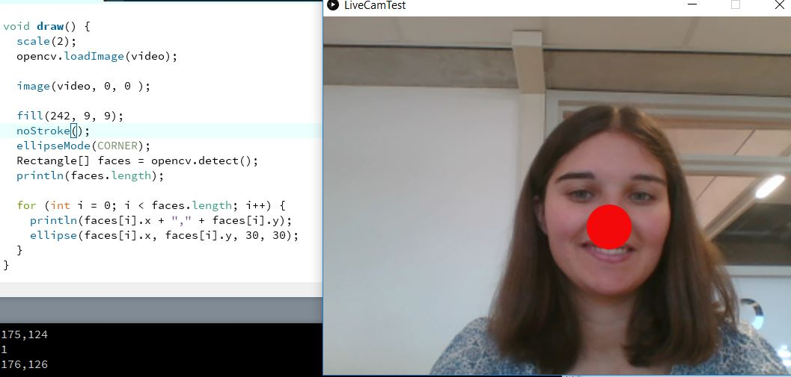

Assignment 1
Met deze opdracht moesten we een plaatje namaken met drie ellipsen erin. Ik heb het nagemaakt en een kleur gegeven.
Assignment 2
Bij deze opdracht moesten we verschillende figuren maken. Ik heb een driehoek en een vierkant gemaakt.
Verder heb ik er ook elk een andere kleur gegeven.
Assignment 3
Bij deze opdracht moesten we interactieve dingen maken. Bij het eerste plaatje beweegt het rode rondje met de muis mee.
Het rondje wordt ook steeds groter. Bij het tweede plaatje wordt het rondje kleiner en uiteindelijk weer groter.
Dit komt omdat hij doortelt in de min waardes en weer naar de pluswaardes gaat.
Assignment CV 1 and 2
Bij deze opdracht werk ik met de camera. Het systeem herkend mijn gezicht en de plaats van mijn neus.
Als hij mijn neus heeft geselecteerd dan komt er een rode neus op mijn eigen neus.

Voor dat ik begonnen was met deze workshop heb ik informatie opgezocht over Java. De eerste topic had ik uitgewerd en daarmee kreeg ik een idee wat er met computer vision gedaan kan worden. Ermee zijn een paar concepten bedacht en heb ik me meer verdiept in het onderwerp. Het programma Java is een nieuwe programma taal voor mij waardoor het een uitdaging was om mee te werken. Tijdens de workshop heb ik de stappen gevolgd en de opdrachten uitgewerkt. Na de workshop op ik meer informatie en projcten bekeken die met Java zijn gemaakt.
In de workshop was het wennen om met een nieuw programma taal te werken. Ik had nog nooit eerder met Java gewerkt en het was een uitdaging voor me. Het was een leuke uitdaging waar ik veel van geleerd heb. Het was erg leuk om nieuwe dingen te maken. We zijn begonnen met simpele dingen zoals figuren maken en een kleur eraan geven. Het was een leuke workshop die ik niet zosnel zal vergeten.